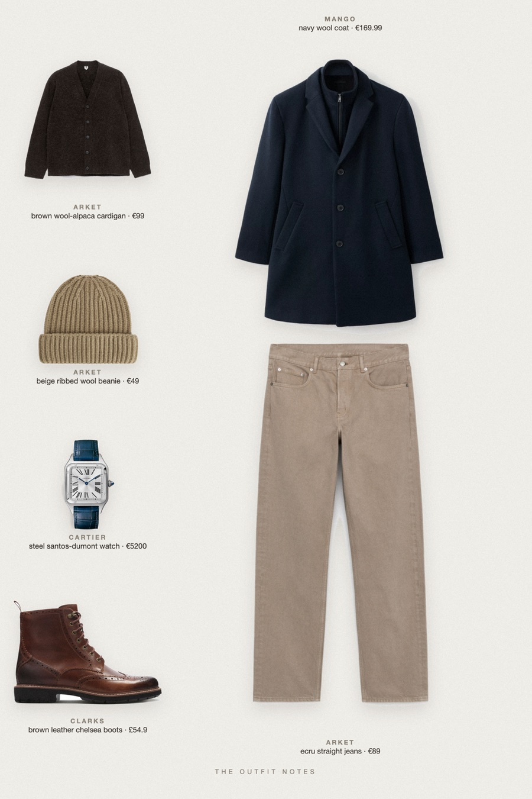
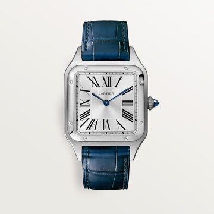

Game Day Warm
navy coat, brown cardigan

Cold weather football game outfit for men: a navy wool coat with removable collar over a brown wool-alpaca cardigan, ecru loose jeans, brown leather chelsea boots and a beige ribbed beanie. A Cartier Santos-Dumont adds the quiet luxury detail. Warm layers, winter outfit men, still sharp.
The pieces
This page contains affiliate links: if you buy through them, we may earn a commission at no extra cost to you. Disclosure.
 Mango
Mango
Navy wool coat
Shop ARKET
ARKET
Brown wool-alpaca cardigan
Shop ARKET
ARKET
Ecru straight jeans
Shop Clarks
Clarks
Brown leather chelsea boots
Shop ARKET
ARKET
Beige ribbed wool beanie
Shop
Cartier
Steel santos-dumont watch
Shop
Prices are indicative, taken when the look was published, and may have changed. Pictures of the outfit are AI-generated illustrations of real products; the product photos are the retailers' own.
Published 2 October 2026.